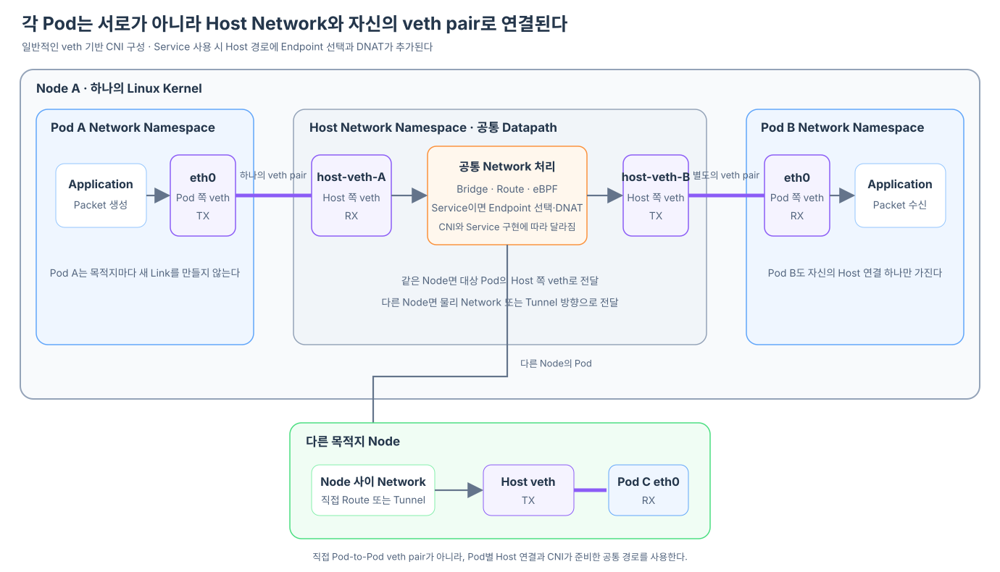

같은 Node에서 실행되는 Pod A가 Pod B로 Packet을 보낸다고 하자. 두 Pod를 하나의 veth pair로 직접 연결하면 가장 짧은 길처럼 보일 수 있다. 그러나 일반적인 Kubernetes Pod Network는 Pod마다 자신의 Node와 연결되는 veth pair를 만들고, Host Network Namespace의 공통 Network 경로가 Pod 사이를 이어 준다.

이 글은 일반적인 veth 기반 CNI 구성을 기준으로 한다. CNI가 ipvlan, macvlan, SR-IOV 또는 eBPF 기반의 다른 Datapath를 사용한다면 Interface와 Packet 처리 위치는 달라질 수 있다.
일반적인 구성에서는 Pod마다 Host와 연결되는 veth pair가 있다
Pod A와 Pod B는 서로 하나의 veth pair를 공유하지 않는다. 각 Pod가 자신의 Network Namespace와 Host Network Namespace를 잇는 별도의 pair를 가진다.
Pod A Network Namespace Host Network Namespace
Pod A 쪽 veth 끝점(eth0) ═══════ Host 쪽 veth-A 끝점
Pod B Network Namespace Host Network Namespace
Pod B 쪽 veth 끝점(eth0) ═══════ Host 쪽 veth-B 끝점
Host 쪽 두 끝점은 Bridge, Host Routing Table, 가상 Switch 또는 eBPF Program 같은 공통 Network 처리에 연결될 수 있다. 어느 방식을 사용하는지는 CNI 구현에 따라 다르지만, 각 Pod가 Host의 Network 처리와 연결된다는 구조는 일반적인 veth 기반 구성에서 공통적이다.
같은 Node의 Pod로 갈 때도 먼저 Host 쪽 끝점에서 수신된다
Pod A의 Application이 Packet을 만들면 Pod A의 Routing Table이 출력 Interface를 결정한다. 출력 Interface가 eth0이라면 Packet은 Pod A 쪽 veth 끝점에서 송신되고, Peer인 Host 쪽 veth-A 끝점에서 수신된다.
Host Network Namespace는 목적지 Pod IP를 기준으로 다음 경로를 선택한다. 목적지인 Pod B가 같은 Node에 있다면 Packet을 Pod B와 연결된 Host 쪽 veth-B 끝점으로 송신한다. 그러면 Peer인 Pod B의 eth0에서 수신된다.
Pod A Application
→ Pod A의 Route 판단
→ Pod A eth0에서 TX
→ Host veth-A에서 RX
→ Host의 Bridge·Route·eBPF 처리
→ Host veth-B에서 TX
→ Pod B eth0에서 RX
→ Pod B Application
따라서 같은 Node에 있는 Pod끼리 통신해도 일반적인 veth 구성에서는 Host Network의 공통 경로를 사용한다. 여기서 Host를 경유한다는 말은 반드시 별도의 Proxy Process가 Packet을 받아 재전송한다는 뜻이 아니다. 같은 Linux Kernel이 Bridge, Routing 또는 eBPF 같은 준비된 Datapath를 따라 Packet을 처리한다.
다른 Node의 Pod라면 Host 경로가 Node 사이 Network로 이어진다
목적지 Pod가 다른 Node에 있다면 출발 과정은 같다. Pod A의 Packet은 먼저 Node A의 Host 쪽 veth에서 수신된다. 이후 CNI가 준비한 직접 Route나 Overlay Tunnel을 통해 Node B로 이동한다.
Pod A eth0에서 TX
→ Node A의 Host veth에서 RX
→ Node A의 Route 또는 Tunnel
→ Node 사이 Network
→ Node B의 Route 또는 Tunnel
→ Node B의 대상 Host veth에서 TX
→ 목적지 Pod eth0에서 RX
veth pair의 두 끝점은 하나의 Linux Kernel 안에 존재한다. 따라서 Node A와 Node B를 하나의 veth pair로 직접 잇는 것이 아니라, 각 Node의 Host Network 사이를 실제 Network나 Tunnel이 연결한다.
두 Pod를 하나의 veth pair로 직접 연결하는 것은 가능하지만 일반 구조로 쓰기 어렵다
Linux에서는 veth pair의 양쪽 끝점을 서로 다른 두 Network Namespace에 넣을 수 있다. 따라서 Pod A와 Pod B를 하나의 pair로 직접 연결하는 것 자체가 기술적으로 불가능한 것은 아니다.
문제는 이 구조가 Kubernetes의 동적인 Pod 집합에 맞지 않는다는 점이다.
- Pod가 여러 상대와 통신하려면 상대마다 Interface와 pair가 필요해진다.
- Pod가 생성·삭제·교체될 때 직접 연결 관계를 계속 다시 구성해야 한다.
- 다른 Node의 Pod와는 하나의 veth pair로 직접 연결할 수 없다.
- 공통 Routing, Network Policy와 관찰 지점을 적용하기 어려워진다.
- Service가 선택한 여러 Endpoint로 유연하게 전달하기 어렵다.
Pod별 veth를 Host의 공통 Datapath에 연결하면 Pod는 상대 Pod마다 직접 Link를 만들 필요가 없다. 자신의 기본 Network 출구 하나만 사용하고, 목적지까지의 경로는 CNI가 준비한 Host와 Node 사이 Network가 맡는다.
Service는 Host 경유를 만드는 것이 아니라 목적지 선택을 추가한다
Pod IP로 직접 요청해도 일반적인 veth 구성에서는 Packet이 출발 Pod의 Host 쪽 끝점으로 나온다. Service를 사용한다고 해서 이 Host 경로가 새로 생기는 것은 아니다.
차이는 Host Network에서 실제 목적지를 정하는 과정에 있다.
Pod IP로 직접 요청
→ Host에서 해당 Pod IP로 Route 판단
Service ClusterIP로 요청
→ Host의 Service 규칙과 일치
→ Endpoint 하나를 선택하고 실제 Pod IP로 DNAT
→ 변경된 Pod IP로 Route 판단
kube-proxy의 iptables 구성을 기준으로 Pod에서 들어온 ClusterIP Packet은 Host Network Namespace의 PREROUTING 경로에서 Service 규칙을 만날 수 있다. 목적지가 실제 Pod IP로 바뀐 뒤에는 일반적인 Pod Network 경로를 따라 같은 Node 또는 다른 Node의 대상 Pod로 전달된다.
구조를 한 문장으로 정리한다
일반적인 veth 기반 Kubernetes Network에서는 각 Pod가 자신의 Node와 veth pair로 연결되고, Host의 공통 Datapath가 같은 Node와 다른 Node의 목적지까지 이어 준다. Service는 이 경로 자체를 만드는 것이 아니라, 안정적인 ClusterIP를 실제 Endpoint Pod IP로 연결하는 목적지 선택 단계를 추가한다.
Host 쪽 veth에서 수신한 ClusterIP Packet에 Service DNAT를 적용하고 실제 대상 Pod까지 전달하는 세부 과정은 eth0으로 내보낸 Packet은 실제로 어디에 전달될까?에서 이어서 볼 수 있다.